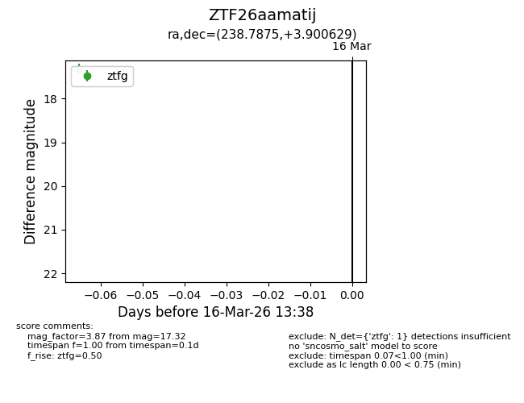
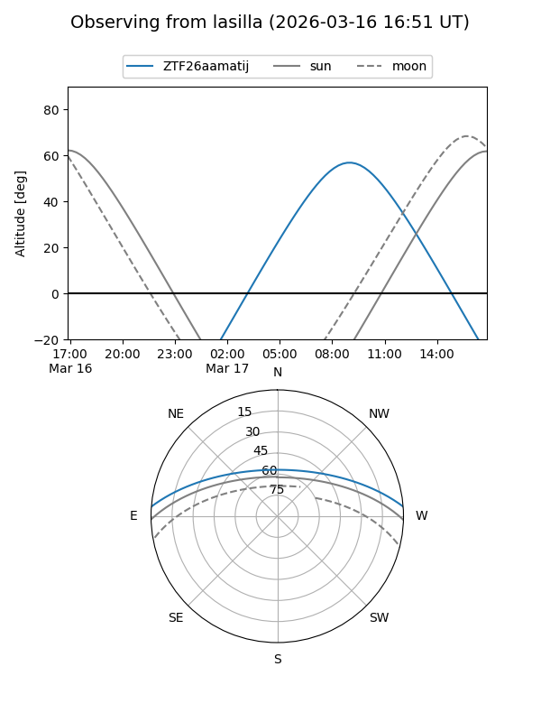
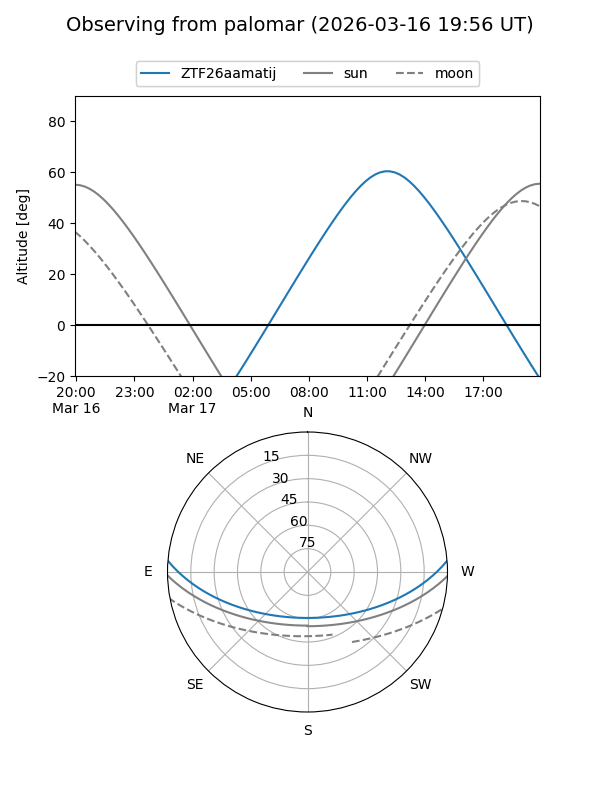

ZTF26aamatij
Target ZTF26aamatij at 2026-03-16 13:40
Aliases and brokers:
FINK: link
Lasair: link
ALeRCE: link
alt names
ZTF26aamatij (ztf,fink_ztf)
Coordinates:
equatorial (ra, dec) = 238.7875,+3.90063
equatorial (HMS+DMS) = 15:55:08.99,+03:54:02.26
galactic (l, b) = (13.2861,+40.43814)
Flags:
Photometry:
last ztfg=17.32
1 ztfg detections
Lightcurve

Visibility


Additional plots